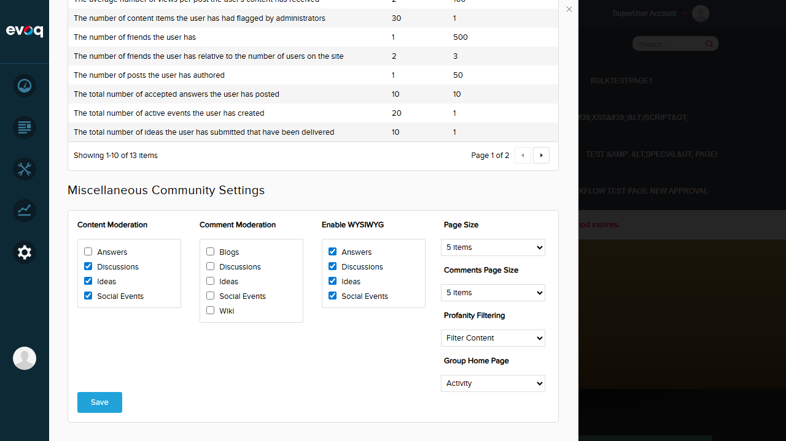
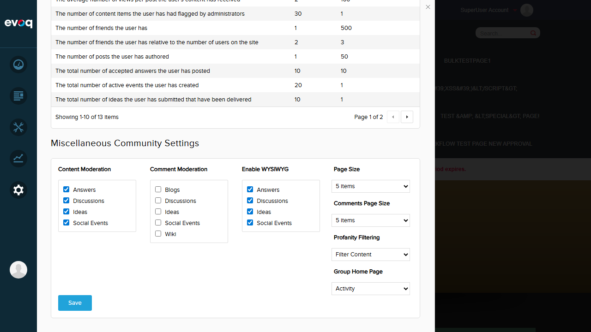

Test 5: Save Settings and Verify Persistence
PASS
Steps Taken:
- Disabled Answers content moderation (unchecked the checkbox)
- Clicked the Save button
- Verified "Item successfully saved." message appeared
- Navigated away from Community Settings to Dashboard
- Navigated back to Settings > Community
- Verified Answers checkbox remained unchecked (setting persisted)
- Re-enabled Answers and saved to restore default state
Result: Settings are correctly saved to the database and persist after navigation. The save operation shows a success message and the settings remain intact after leaving and returning to the page.

Screenshot: Settings saved successfully

Screenshot: Settings persisted after navigation (Answers remains unchecked)

Screenshot: All settings restored to default (all checked)